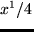
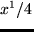

for Columns, or

for Rows, where
PLOT produces a plot of a selected rows, columns, or spectra for up to 15 different images, using the LickMongo plotting package. All the specified buffers will come out on the same plot, or each successive specified buffer can come out in a series of windows (with the number of horizontal and vertical windows specified by the NH= and NV= keywords). If desired, all the plots can come out in a single subwindow using the WIND= keyword. PLOT also allows the possibility of hardcopy on your hardcopy device (as specified by the TERM HARCOPY= command).
The index 'buf' specifies which of the image buffers contains the image for plotting a row or column. No 'buf' is needed to plot results from the PROFILE or the MULT common block, which contain profiles determined with the PROFILE or SNUC command. The optional index 'box' specifies one of the 10 available boxes (see BOX command) to be used to select a sub-section of an image. Row 'n' is displayed by using the option R=n, column 'n' by using the C=n option, and spectrum 'n' by using no option. The RS and CS keywords are used to display the sum of the selected rows or columns in an image.
Normally the endpoints of the x- and y-axes are selected in this way: The x-axis runs over the entire row, column, or spectrum selected. The minimum and maximum y-values define the corresponding limits for the y-axis.
XS and XE override this autoscaling and allow you to set the limits along the X-axis. XS and XE refer to the starting and ending X values in pixels (or Angstroms for a spectrum with a wavelength scale determined.) If the USER option is defined, XS and XE are in the user-defined coordinates. MIN and MAX override the autoscaling and allow the user to set the limits along the Y-axis.
The keyword GRID will produce a coordinate grid on the plot. This is very useful if you are trying to make measurements from a hard copy plot. The keyword INFO will put some additional information onto the plot.
LOG and SEMILOG will produce Log-Log or Log-Linear plots as desired. The R4 keyword will plot along the x-axis, particularly useful when plotting the output image from PROFILE. NOLABEL prevents the drawing of axis labels and the name of the image or spectrum. Use this with NOERASE to overplot several graphs. The OLD keyword will produce a plot using the last used set of parameters.
If multiple window are desired, use the NH= and NV= keywords to set the number of windows in the horizontal and vertical directions, respectively. The plots of b1, b2, b3 ... will appear in the window starting in the upper left and progressing right across the page and then down. If limits are specified with MIN and MAX, e.g., all windows will have these limits. If no limits are specified, each window will autoscale individually.
If you wish all plots to be sent to a subwindow, use the WIND= keyword, with three parameters following the normal LickMongo syntax; number of windows in the x direction, number of windows in the ydirection, and a specification of which window to draw into (e.g. WIND=2,3,5 will draw in the upper left window of a 2x3 layout).
HARD will send the plot to the hardcopy device as specified by the TERM command (or the default device). If you use the PSFILE=file option, PostScript output is sent to the specified file, rather than directly to the printer. The PORT keyword will make a Portrait mode plot (long side of the paper vertical), and EPS will make an Encapsulated PostScript file. EPS should be used in conjunction with the PSFILE= keyword to create the EPS file.
The MACRO=file keyword can be used to execute the Mongo macro file 'file' after each plot is made. This provides a way to add additional annotation or data to a plot (especially for preparation of figures for papers or talks).
INT is an alternative to MACRO= that invokes an interactive LickMongo shell allowing users to enter plot annotations and other commands interactively. Note that if this is done on a screen plot you need to use the WRITE ALL ... command in LickMongo to save the macro, then when you make a hardcopy you can use the MACRO= keyword to execute the LickMongo commands.) If MACRO= and INT are both specified, the macro file will be executed before the user is put into the interactive LickMongo shell.
USER will scale and label the axes according to the user-defined
coordinates instead of pixels. This is done using the CRVALn, CRPIXn,
CDELTm, CTYPEn and BUNIT cards in the image (or spectrum) FITS header. The
conversion between user coordinates and pixels is given by:

for Columns, or

for Rows, where
The X-axis label is taken from the CTYPEn card, which is a CHARACTER string surrounded by single quote (') marks. The Y-axis label is taken from the BUNIT card, which is a CHARACTER string surrounded by single quote (') marks containing the appropriate units for the "Intensity" units of the pixels (e.g. counts/sec or flux). These header cards may be set using the HEDIT command. If a particular FITS card is not found, appropriate defaults are chosen, but be warned: older images and spectra from the Lick Data Taking programs do not conform to the FITS standard and may give strange results.
Examples: